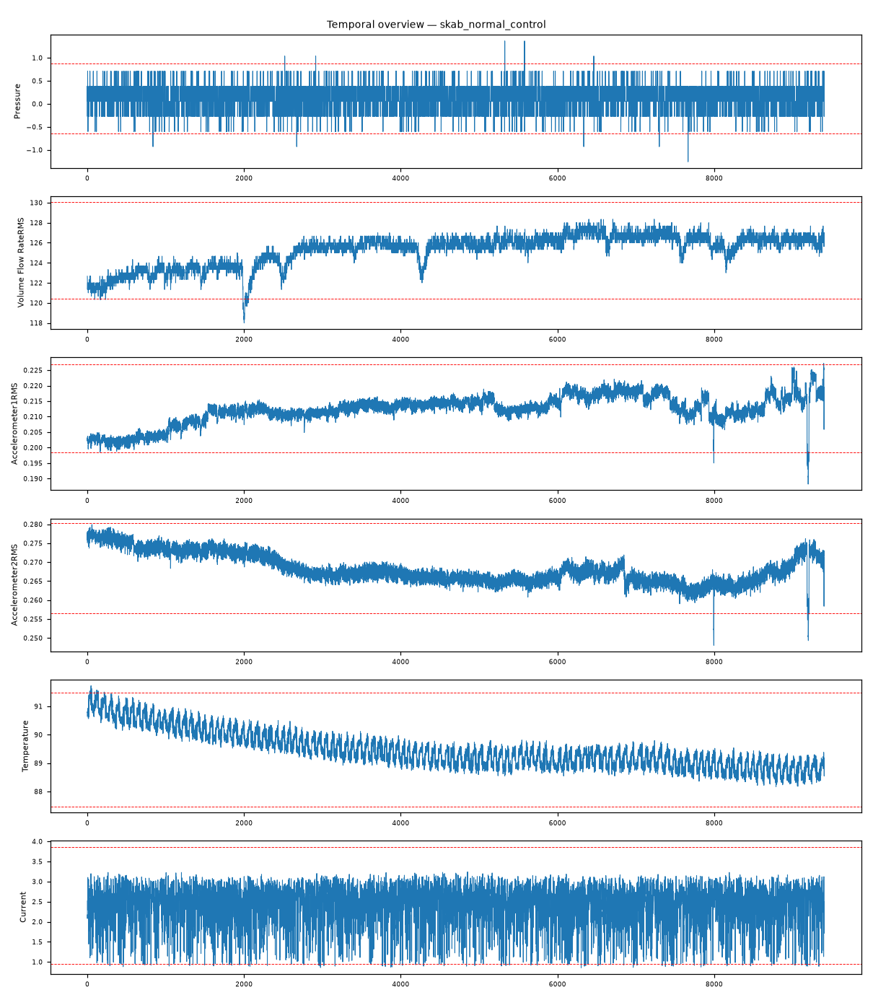

202609121643039_bench_skab_normal_control · 执行模式 zcode-direct系统处于正常稳态运行（无故障基线）：全通道受控波动、无主导异常列，超3σ点为孤立瞬态（9405 行记录下高斯尾部期望内），跨域耦合为稳态热平衡结构。
Pressure max|z|=5.4，超3σ占比 0.1%Accelerometer1RMS max|z|=5.14，超3σ占比 0.2%Accelerometer2RMS max|z|=5.1，超3σ占比 0.1%Volume Flow RateRMS max|z|=4.51，超3σ占比 0.6%Temperature max|z|=3.38，超3σ占比 0.2%Current max|z|=3.18，超3σ占比 0.9%强相关对：Temperature ~ Thermocouple: r=-0.891；Thermocouple ~ Volume Flow RateRMS: r=0.830；Temperature ~ Volume Flow RateRMS: r=-0.760；Accelerometer2RMS ~ Thermocouple: r=-0.759；Accelerometer1RMS ~ Thermocouple: r=0.741；Accelerometer1RMS ~ Volume Flow RateRMS: r=0.713
| # | 假设 | 机制 | 置信 | 裁决 |
|---|---|---|---|---|
| 1 | 正常稳态运行（无故障基线） | normal-operation | 90% | surviving |
| 2 | 未观测的早期故障（低幅隐匿演化） | normal-appearance | 10% | eliminated |
| 3 | 多传感器同步漂移 | sensor-drift | 8% | eliminated |
| 假设 | 机理链 | 支撑证据 | 证伪条件 |
|---|---|---|---|
| 正常稳态运行（无故障基线） | 长记录受控运行 → 各通道围绕设定值正常波动（brief：全列谱 max|z| 3.18-5.4，超3σ占比 ≤0.9%） 超限点为孤立瞬态而非事件链（占比 0.1-0.9%，对应每千行数个点）——受控噪声尾部 跨域耦合呈稳态热平衡结构（brief：Temperature~Thermocouple r=-0.891、Thermocouple~Volume Flow RateRMS r=0.830） | L3 统计：异常列谱无主导列（最大仅 Pressure 5.4，且超3σ占比 0.1%≈孤立瞬态）——无故障 signatures L3 统计：Current max|z|=3.18、Voltage 未入 top-6——电气侧平稳 L3 统计：强相关对全部为热平衡物理对（电机温度-流体温度互逆 r=-0.891；流体温度-流量同向 r=0.830）——正常换热结构 L4 视觉：全通道围绕均值带状波动，±3σ线外为孤立点而非事件链（fig_temporal_overview.png） | 若任一通道出现阶跃/爆发/漂移形态（事件链超限），正常判定将被推翻 若耦合结构出现非物理方向（如温度-流量关系反转），需重新审查 |
| 未观测的早期故障（低幅隐匿演化） | 早期故障即使低幅也应留下形态痕迹（漂移起点/微事件链） | L3 统计：无任何通道呈漂移或事件链形态 | 若后续记录显示某通道基线持续单向下移，本假设复活 |
| 多传感器同步漂移 | 漂移应产生跨通道的系统性偏移而非物理一致的耦合结构 | L3 统计：Temperature~Thermocouple r=-0.891 互逆与 Thermocouple~Flow r=0.830 同向并存——方向结构只能是物理过程 | 若离线校准发现温度链路灵敏度漂移，本假设复活 |
| 维度 | 得分（/10） |
|---|---|
| data_quality_awareness | 9 |
| variable_classification | 9 |
| time_alignment_and_sorting | 9 |
| visualization_quality | 9 |
| evidence_based_conclusions | 9 |
| correlation_vs_causation | 9 |
| uncertainty_disclosure | 9 |
| report_quality | 9 |
| no_over_claiming | 9 |
| completeness | 9 |
Step 0 setup（setup.mjs）→ Step 1 inspect（inspect.mjs）→ Step 2 本体（context-builder 角色）→ Step 3 统计（stats 包 + 驱动单变量/相关分析）→ Step 3.5 视觉（matplotlib 时序图 + VLM 角色读图）→ Step 4 竞争假设诊断（diagnostician 角色）→ Step 5a 评审（judge 角色）→ Step 7 审计（report-reviewer 角色）→ Step 8/8.5 HTML 与审校。统计引擎：stats-package。

judge 91/100（pass）；审计 ENDORSED：正常判定的证据链完整：统计预期（n=9405 尾部）、形态（孤立瞬态）、结构（热平衡耦合）三面一致；无过度报警倾向。
| 变量 | max|z| | 超3σ占比 |
|---|---|---|
| Pressure | 5.4 | 0.10% |
| Accelerometer1RMS | 5.14 | 0.20% |
| Accelerometer2RMS | 5.1 | 0.10% |
| Volume Flow RateRMS | 4.51 | 0.60% |
| Temperature | 3.38 | 0.20% |
| Current | 3.18 | 0.90% |
强相关对（经反假相关与多重检验校验）：Temperature ~ Thermocouple: r=-0.891；Thermocouple ~ Volume Flow RateRMS: r=0.830；Temperature ~ Volume Flow RateRMS: r=-0.760；Accelerometer2RMS ~ Thermocouple: r=-0.759；Accelerometer1RMS ~ Thermocouple: r=0.741；Accelerometer1RMS ~ Volume Flow RateRMS: r=0.713
18 项必需产物：input_manifest / user_context / run_config / ontology / schema / feature_summary / analysis_parameter_selection / scenario_classification / anomaly_report / validate_report / data_analysis_conclusion / plot_manifest / visual_analysis / image_captions / diagnosis / evidence / confidence / reasoning_chain / judge_feedback / report.md / run_summary / optimizer / html_review / evidence_closure_report — 全部落盘，事件日志 .pipeline_events.jsonl 经 pipeline-log-check 校验。
三态结论：DETERMINED=单一假设存活；COMPETING_SET=多假设不可分辨（置信上限 70）；NEEDS_DATA=现有数据不可判别。CDR=Top-1 且 DETERMINED（FDDBenchmark 口径）。证据等级 L1 直接测量 / L3 统计 / L4 视觉 / L5 本体机理。